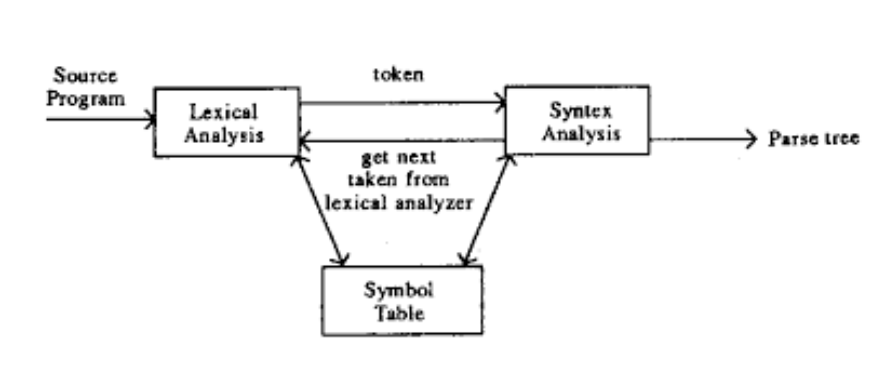
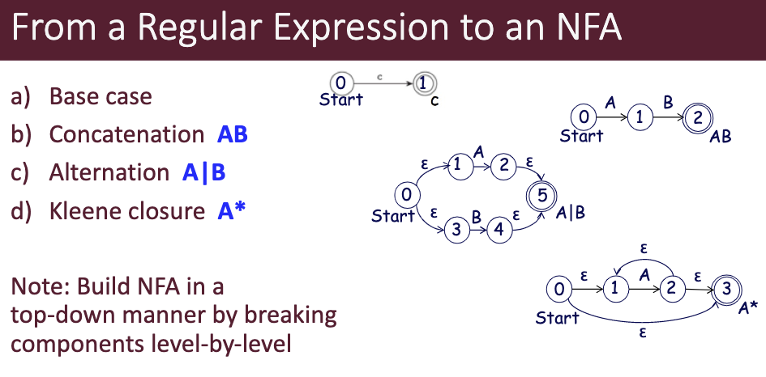

What is a language?
Syntax
Describe what a program looks like.
Specified using regular expressions and
context-free grammars
Semantics
Describes what a program means.
Specified using axiomatic, operational or denotational
semantics.
Regular Expressions
A unified representation for a set of strings. Constructed with
a A characterε The empty string denoted. Concatenation
| “Or”
* Kleene star (zero or more)
- B* => ““,”B”, “BB”, “BBB”, ….
+ one or more
- c+ => “c”, “cc”, “ccc”, …
[] selects any char
[]+ subcomoment with 1 or more instance
- [ab]+ => “a”, “b”, “aa”, “ab”, “aba”, “ba”, …
- defines a range
- [0-9] digits
- [A-Z] uppercase letters
Lexeme, Token, & Pattern
Lexeme:
A sequence of characters in the source program with the lowest level
of syntactic meanings.
Token:
- A category of lexemes
- A lexeme is an instace of a token
- Basic building blocks of programs
Examples
| keyword |
if else |
| comparison |
<=, !=, == |
| number |
0 |
| id |
pi, score d2 |
Pattern:
- Description of the form of lexemes
- Specified with regular expressions
- Pattern for identifies is
letter(letter|digit|_)*
Context Free Grammar
Uses BNF notation
- Terminals: basic symbols which form strings
- Non-Terminals: syntaxtic variables to impose the
structure
- Start-Symbol: a non-terminal you always
start with
- Production: Rules for how to replace non-terminals
- Ex: -> if then | if then
else
- Derivation: Repeatedly applying rules to
nonterminals gives us a string only terminals.
- Sentence: A string with only terminals
- Sentinal Form: A string with terminals and
non-terminals
- Left recursion: Recursion occurs on the left
- Right recursion: Recursion occurs on the right
- Leftmost derivation: Derivation using the left-most
non-terminal.
- Creates a left-sentinal form
- Rightmost derivation: Derivation using the
right-most non-terminal.
- Creates a right-sentintal form
- Note some derivations are neither left not right
Big Picture

Parse Tree
A parse tree is a hierarchal representation of a derivation as a
tree.
A grammar is *ambiguous if a senintal form has more
than 1 unique parse tree.
Associativity: group left to right or right to left
[Ex: (10 - 4) - 3 vs 10 - (4 - 3)]
Precedence: order of operations. Think PEMDAS
Ambiguous grammars don’t capture these properties
EBNF
Extensions of BNF
* 0 or more() alternative parts[] optional parts
Lexical and Syntactic
Analysis
- Lexical Analysis (Scanner) turns characters into tokens
- Uses regular expressions
- Reports lexical errors
- Removes comments and white space
- Expand macros and implement preprocessor functions
- Syntactic Analysis (Parse) turns tokens into a parse tree
- Uses the BNF to verify the structure

DFA/NFA
Each of these is a graph which represents a state machine made of
- A finite set of states (Q)
- A finite set of input symbols (E)
- An initial start state
- A set of accept states
- Transition functions
- DFA transition functions take a state and input and output
1 state
- NFA transition functions take a state and input and output
Multiple states

NFA to DFA
Trans(State, input) = States reachable by using the input once or
using epsilon as many times
Minimize DFA
Replace all states with the same transitions
Note: 2 states dont have the same transitions if one is a
final state and the other is a non final state